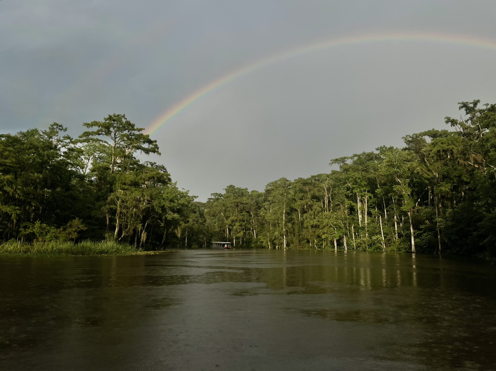

I'm paid to be the dumbest person in the room. And I love it!
Keep in mind, I am a mechanical engineer with a degree from one of the best schools in my country. I work with cutting-edge robotics and autonomous systems at a highly advanced company. I also spend half my time traveling to the US to visit researchers and lecturers at top-rated universities. So what gives?
My job is to learn about these researchers' work and discuss how my company's systems could help them do their work even better. It seems straightforward until you're the one actually on the road, and you realize it goes so much deeper than just some consulting.
It's making me into a better me, professionally and personally. Here are some takeaways so far:
Lesson 1: There's always a bigger fish, and that's pretty great
Researchers are very specifically knowledgeable. During a recent visit, one brought up his work on wafer scanners. I immediately thought, "yum, Stroopwafles" until he started talking about semiconductors, and I realized I needed a snack. I am not a subject matter expert on semiconductor manufacturing, nor impulse control, nor underwater concrete 3D printing, nor anything else these people study, but my education and subsequent work experience have prepared me enough to at least hold a conversation.
That is exactly what I need to learn the basics of their work, translate their needs into product requirements, and begin the conversation on which system would be best for them. It's an appreciated skill to bring to the consultation.
When I first started this job, I held myself to unreasonably high expectations. It's always great to familiarize myself with the basics of a client's study, but it's not feasible for me to learn their life's work after an hour of Googling. I, for better or worse, am not AI, so this brings me to the next lesson, of how I compensate:
Lesson 2: Curiosity saved the cat
I ask a stupid amount of questions. Some of these questions are also stupid, but if I need to know, I will always ask. I feel free to do so because of my well-trained response to humility (see: Why Engineers Should Do Improv for more on that), but also because I've learned that it's one of the quickest ways to develop mutual understanding. And where there's understanding, better relationships can grow.
Curiosity is also a way to show authenticity. If I'm genuinely intrigued by what they plan to use a product for, I won't hide that. I feel so much more connected when interests are shared. One question leads to another, then a commonality is found, and the conversation meanders down a whole new path, and suddenly we're sitting across a table dumbfounded as we're realizing our families' villages are ten minutes from each other back home in Greece.
After promising we won't share the directions to our favourite secret beach to anyone, we resume our conversation on autonomous vehicles with a deeper sense of trust based on understanding. It goes like a well-oiled machine, and it wouldn't have happened if I didn't offer authenticity through curiosity. Though, that's sometimes a daunting task. Which leads me to:
Lesson 3: Kenny Loggins had the right idea
I don't think I'll ever be lucky enough to hop into a Top Gun-style fighter jet (if you know someone who can hook me up, give me a ring), but that's quite a drastic example of what it means to step out of one's comfort zone. Taking this job, saying "yes, I'd like to be away from home for weeks at a time to meet with highly intelligent strangers and explore Hilton's vast collection of business hotels", was a scary thing for me. It was a big jump from my last role which took place at an office a 20 minute bike ride away.
But it's dangerous to stay stagnant. Dangerous to personal growth, to the collection of novel experiences, to the exposure to new ideas and ways of thinking. As a proud lifelong learner, I simply can't be the best me if I sit quietly in my comfort zone. So, here I am.
My favourite butter chicken dish comes from a Nepalese restaurant in South Dakota. I stood beneath the weather drones they filmed for Twisters in Oklahoma. I learned how to lasso at a rodeo in Colorado. All these experiences, these exciting additions to Chloe, all because I took this big, scary job.
With each new client comes a new conversation and new possibilities. I'm ecstatic to be in a position where my job can not only help my clients do better work, but provide so much to me as well.
I hope you feel a little more connected to me after reading this. Yes, I admit, at first this job was daunting. But it's one of the greatest ongoing adventures I've had. The more people I meet, the more I learn, and maybe one day my travels will lead me to the Netherlands, and when an engineer asks if I know anything about wafers, there might actually be a chance I'll know exactly what they're talking about.
Roadtrip-worthy butter chicken. South Dakota.

The Honey Island Swamp. Louisiana.

Giddy up. Colorado.